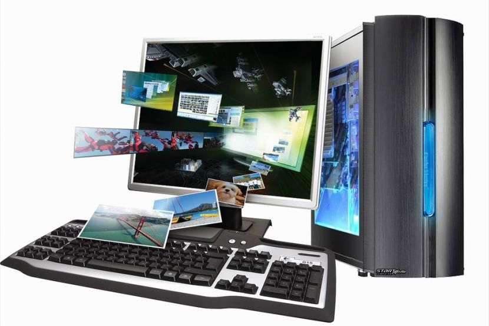

Персональным компьютером  (ПК) называют электронную вычислительную машину (ЭВМ), расчитанную на одного пользователя и управляемую одним человеком.
Современные ПК характеризуются:
Благодаря развитию локальных и глобальных вычислительных сетей пользователь ПК может по ним получать любые справки из любых библиотек, информационных центров как своего региона, так и страны и всего мира